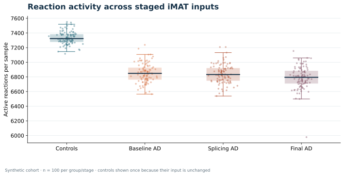

R / DESeq2
Open repository
RNA-seq Workflow
End-to-end DEG workflow with count data, metadata, QC, DESeq2 analysis, PCA, heatmaps, volcano plot, result tables, and a short interpretation report.
End-to-end DEG workflow with count data, metadata, QC, DESeq2 analysis, PCA, heatmaps, volcano plot, result tables, and a short interpretation report.
A public rMATS skipped-exon analysis example with event filtering and candidate review notes.
Open repositoryCurated Alzheimer/control workflow integrating Salmon quantification outputs, Human-GEM resources, GEMsplice/iMAT-style scripts, summary tables, figures, and final report structure.
Open repositoryContext-specific AD and control models from Salmon quantification outputs, with precomputed results, QC reports, and figures.
Open repositoryThree computed iMAT layers for 200 artificial samples, with downloadable matrices, statistics tables, and input audits.
Open the results showcaseInteractive terminal tool for per-sample Human-GEM iMAT, Fisher and reporter-like analysis, and optional gene zeroing, with a synthetic demo.
Open projectSequence alignment, FASTA utilities, motif search, volcano plotting, variant summaries, and interactive R/Shiny exploration examples.
Open repositorySynthetic data, computed with Gurobi
Follow 200 artificial samples through Human-GEM 1.12.0, COBAMP reaction scoring, TROPPO iMAT with Gurobi, and Fisher plus reporter-like statistics. The showcase includes all three reaction matrices, four vector figures, and the checks behind them.
A reproducible methods demonstration using synthetic inputs. No biological or clinical conclusion is drawn from these figures.

100 samples per group or stagePortfolio figure showing differential expression signal across genes, prepared as part of a reproducible RNA-seq workflow.
Example output from public dataset.
Quality-control style output for reviewing sample relationships before interpretation.
Example output from public dataset.
Expression-pattern figure prepared for selected differentially expressed genes.
Example output from public dataset.
Advanced portfolio output comparing Alzheimer and control groups across pathway-level metabolic flux changes.
Public RNA-seq source: PRJNA670209 (SRR12850842, SRR12850850–54; 3 AD, 3 control samples).
Projection panels showing how sample groups separate across selected metabolic objective values.
Public RNA-seq source: PRJNA670209 (SRR12850842, SRR12850850–54; 3 AD, 3 control samples).
Pathway-level scatter plot from the HumanGEM tx2gene analysis.
Public RNA-seq source: PRJNA670209 (SRR12850842, SRR12850850–54; 3 AD, 3 control samples).
All 100 samples in each group or stage are shown. The same control vectors are used throughout the staged comparison.
Synthetic-data methods demonstration. Open full results and downloads.
Each artificial AD-labelled sample is paired with its own splicing and rank-adjusted model.
Synthetic-data methods demonstration; no disease inference.
Portfolio outputs are shown for research-support demonstration only. Clinical diagnosis, treatment decisions, and patient-specific interpretation are outside the service scope.